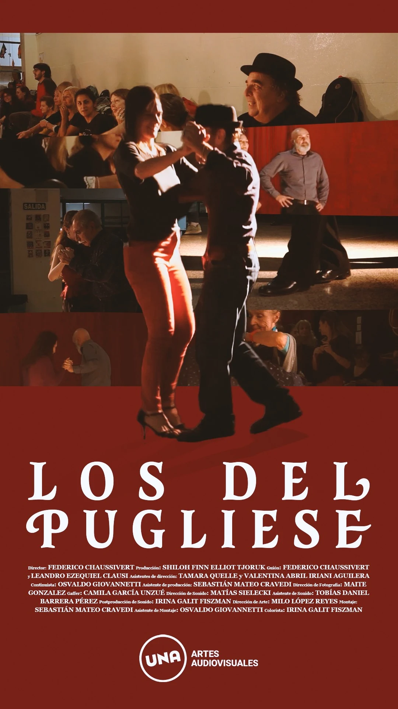
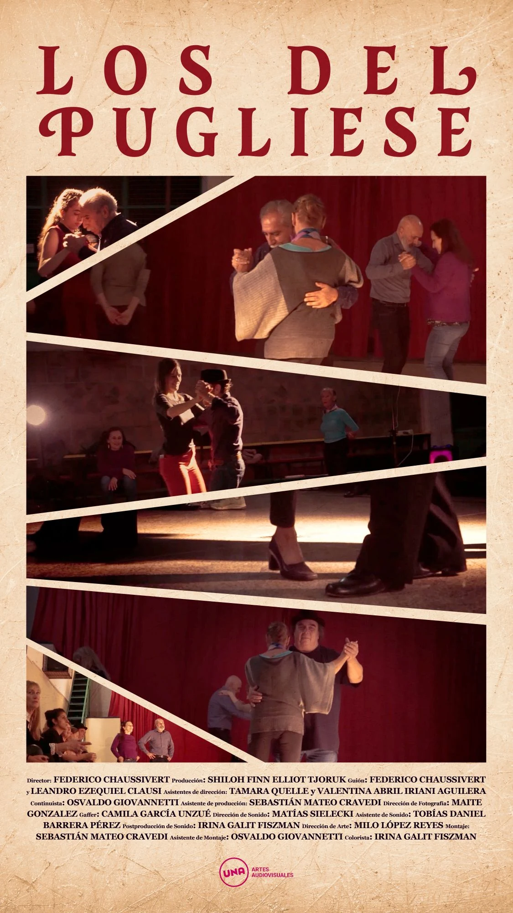

Afiche para el documental «Los del Pugliese», con tipografía clásica, franjas diagonales y textura de papel envejecido.
Diseño de afiche para «Los del Pugliese», un documental de UNA Artes Audiovisuales pensado para su presentación en un festival de cine. Trabajé la gráfica con la lógica de los carteles clásicos de cine: un título tipográfico con mucha presencia, un bloque central de imágenes del rodaje y los créditos completos al pie junto al logo institucional. Desarrollé dos versiones del afiche —una sobre fondo rojo con un fotomontaje en franjas y otra sobre papel envejecido con franjas diagonales— para evaluar distintos climas, siempre con el mismo espíritu íntimo y comunitario del proyecto.
La idea detrás de esta portada fue reflejar el espíritu íntimo, emotivo y comunitario del proyecto. Quise que desde lo visual se perciba que esto no es sólo un documental, sino una experiencia cargada de emoción, memoria y encuentro.
Usé una tipografía serif, con un aire clásico, que remite a los viejos afiches de cine y a la estética del tango tradicional. Me pareció importante que el título «Pugliese» se vea con presencia, porque carga mucho peso simbólico.
Decidí organizar las imágenes en franjas diagonales para darle ritmo y dinamismo. Me gustó la idea de que parezcan casi recuerdos en movimiento, como flashes de momentos compartidos. Eso le da una sensación más viva, más humana, y no tan estructurada.
El fondo tiene una textura tipo papel envejecido que ayuda a generar una sensación de archivo o de memoria. Y los tonos cálidos de las fotos aportan cercanía.
Los créditos los ubiqué en la parte inferior, siguiendo una lógica clásica de afiche cinematográfico. Traté de que tengan buena legibilidad sin quitarle protagonismo a las imágenes. El logo de la UNA está presente, pero de forma sutil para no romper con el equilibrio general.

